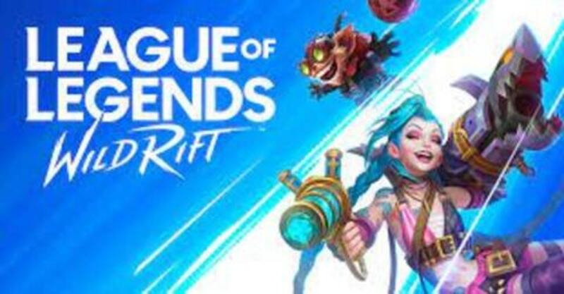
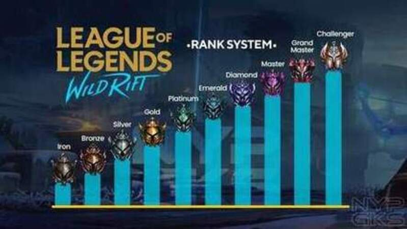

Mi hobbie favorito es jugar Wild Rift


Es un videojuego multijugador de arena de batalla on-line desarrollado y publicado por Riot Games.
Estas son las ligas de Wild Rift.
Mi campeon preferido Nasus

Nasus es un imponente Ascendido con cabeza de chacal, una de esas figuras heroicas y divinas que el pueblo de Shurima veneraba en el pasado.